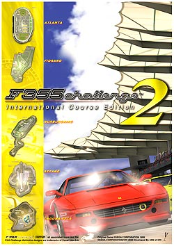
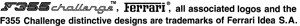

|
isao.netのアクセスポイントが拡大・変更になる”ダイアルアップファン計画”が実施されます。 これに伴い、一部地域ではアクセスポイントの電話番号が変更となります。 また、 ほとんどのアクセスポイントをNTT以外の回線事業者を使い提供されますので、一部アクセスポイントを除きNTTの各種割引サービス（テレホーダイ、ｉ-アイプラン、ケンタくん、タイムプラス、エリアプラス等）がご利用できなくなります。 詳しくは、isao.net公式サイトのサポートページから「アクセスポイントの設定をご確認ください」をご覧ください。
F355チャレンジのPlayStation2版、「Ferrari F355 challenge」の発売日が決定しました！ 詳しくは、Ferrari F355 challenge公式サイトをご覧ください。
旧F355チャレンジBBSの動作が不安定だった為、皆様には大変ご迷惑をおかけしておりました。 暫定的な対処をしてまいりましたが、この度BBSを一新し、安定動作するBBSに移転しました。 http://www2.sega.co.jp/bbs/article/f/ferrari/ 尚、旧BBSは閲覧専用となります。 過去ログの参照にご利用ください。 http://www.sega-rd2.com/bbs/f/f355/index.shtml また、新BBSでは、再度新たに確認キーを取得していただけますよう、お願いいたします。 障害発生中は、多くの皆様にご迷惑をおかけいたしましたことを深くお詫び申し上げます。 今後とも、F355チャレンジとF355チャレンジ BBSをよろしくお願いいたします。 2002年6月28日 SEGA-AM2
5/20頃より、DOWNLOADコーナー【プロドライバー走行データ】のダウンロードが出来ない状態になっておりました。 現在は復旧しておりますが、ドリームキャストにキャッシュが残っていた場合、同じ不具合が出ることがあります。 その場合、一度再読み込みをしていただけば、問題なくダウンロードすることができます。 障害発生中は、多くの皆様にご迷惑をおかけ致しましたことを深くお詫び申し上げます。 2002年6月6日 SEGA-AM2
4/18頃より、F355チャレンジ BBSに書き込みができなくなっておりました。 現在は復旧しており、通常通り書き込みしていただけますが、もしお持ちの確認キーで書き込みを拒否された方は、再度新たに確認キーを取得していただけますよう、お願いいたします。 障害発生中は、多くの皆様にご迷惑をおかけいたしましたことを深くお詫び申し上げます。 今後とも、F355チャレンジとF355チャレンジ BBSをよろしくお願いいたします。 2002年5月7日 SEGA-AM2
|
|||||||
| (C)SEGA ,2000  Ferrari Official Web Site 本ホームページに掲載する一切の文書･図版･写真等を、手段や形態を問わず複製、転載することを禁じます。 The copyrighted works contained in this information service shall not be copied, reproduced, varied, altered, modified, adapted, distributed, performed and displayed in any form without the written permission of the copyright owner. 【お問い合わせ】 当サイトに関するご質問・お問い合わせはこちらで受け付けています。 【リンクについて】 F355 Challenge the official web site(http://www.sega-am2.co.jp/f355/)へのリンクはご自由にどうぞ。バナーを希望される方はこちらをご覧ください。 |
||